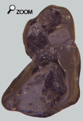
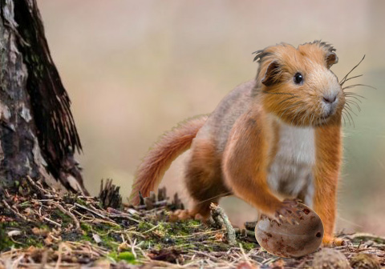

|
Crêtes et cratères...

 Ce rongeur est un élément endémique mais très discret des assemblages faunistiques du miocène européen. On sait avec une quasi-certitude que ce taxon est issu de la famille des cricétidés.
Mais on connait peu de choses de cet animal, si ce n’est quelques éléments osseux crâniens et surtout la dentition. Ces dents sont caractéristiques au point que même un fragment de molaire permet d’identifier Melissiodon. La forme de la face occlusale est basée sur des pointes reliées par des crêtes étroites qui constituent un ensemble de cratères. Il s’agit d’une configuration très spéciale qui fait penser aux rayons de miel des abeilles. C’est d’ailleurs de là que vient le nom Melissiodon. Ce «rongeur» possède également une mandibule allongée et mince qui exclut un régime alimentaire fibreux d’herbivore classique exigeant de la puissance de friction sur les incisives.
Les molaires à cratères sont généralement rencontrées chez les mammifères frugivores (comme les écureuils volants) et c’est sur la base de cette observation qu’on a été amené à supposer que Melissiodon se nourrissait essentiellement de fruits charnus. Si on admet cette analogie, on peut estimer que ce rongeur vivait dans un milieu arboré (forêt) qui permette de trouver des fruits mûrs toute l’année. Par extension le corps de Melissiodon devait avoir possédé des attributs de grimpeurs comme une longue queue préhensible (différente des cricétidés actuels) et des pattes avant puissantes. Mais Melissiodon est rare dans les sédiments lacustres ou fluviatiles, caractéristiques des milieux boisés. En revanche, il est plus commun dans les dépôts de remplissage des fissures karstiques, ce qui laisse penser que Melissiodon occupait des plateaux calcaires secs.
 Ce qui n’est pas concordant avec un animal frugivore. Alors il existe une autre interprétation écologique pour cet animal mystérieux. La mandibule fine fait penser à celle des rats-musaraignes qui sont des taxonomiquement des rongeurs mais écologiquement parlant, des insectivores. Ils se nourrissent de larves et de coléoptères. Ce régime alimentaire pose moins de conditions écologiques qu’un régime frugivore puisque les insectes sont abondants dans pratiquement tous les écosystèmes tropicaux.
Quoi qu’il en soit on ne peut pas dire que Melissiodon ait beaucoup prospéré dans aucun des écosystèmes du miocène d’Europe. Il reste un élément rare de la faune néogène européenne.
Dans les faluns, Melissiodon avait quand même déjà été signalé par L. Ginsburg dans une note sur les vertébrés des Beilleaux à Hommes. |